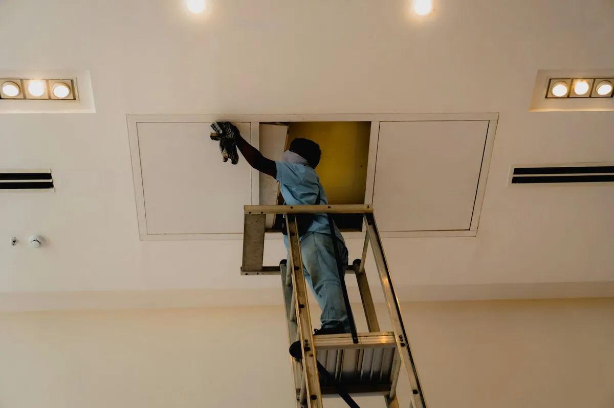

A dirty evaporator coil quietly kills your AC’s cooling power and drives up your electric bill. We clean it properly so your system works the way it’s supposed to in San Antonio’s heat.

AC evaporator coil cleaning in San Antonio removes the dust, grime and biological film that builds up on the coil inside your air handler over months of near-constant summer use. A clean coil transfers heat efficiently and lets air move through it freely; a dirty one restricts airflow and forces the system to work harder for the same amount of cooling, which is one of the most common — and most overlooked — reasons an AC system stops keeping a house cool.
We access the coil through the air handler cabinet, apply a coil-safe cleaning solution that breaks down grime without damaging the fins, and rinse or wipe it down depending on the coil type and how much buildup is present. We also check the condensate drain line while we’re in there, since a clogged drain is a common side effect of a dirty coil and can lead to water damage if it backs up.
Watch for airflow that feels weaker than it used to even on the highest fan setting, cooling cycles that run longer than normal to hit the thermostat setpoint, an unexplained jump in your electric bill during similar weather, or visible ice on the refrigerant line running to the outdoor unit. Homes that haven’t had the coil serviced in 2 or more years, or that use the AC nearly year-round like most San Antonio households do, are the most likely candidates.
The evaporator coil sits directly in the airstream pulled through your return ducts, so any dust, pet dander or fine debris in that air eventually sticks to the coil’s cold, often slightly damp surface. San Antonio’s long cooling season means the coil is working — and collecting buildup — for more months out of the year than it would in a milder climate, which is why local systems often need coil cleaning more frequently than the national average suggests.
Most San Antonio homes pay $150 to $300 for evaporator coil cleaning. The main factors are how accessible the air handler is, whether it’s a straightforward wipe-down or a heavier buildup that needs a more involved cleaning process, and whether we find early signs of mold that call for a sanitizing step. We’ll give you the real number after a quick look at the coil, not before.
If the main symptom is weaker airflow or higher bills with no dust or odor complaints, the coil is the more likely culprit and cleaning it alone may solve the problem. If you’re also seeing visible dust from the vents or a musty smell tied to the AC running, the ductwork itself likely needs attention too, and bundling both services in one visit is usually more cost-effective than doing them separately. We’ll tell you honestly which one your symptoms point to during the inspection.
Signs include weaker airflow from the vents even though the system is running, longer cooling cycles, higher electric bills than normal for the same weather, or ice forming on the refrigerant line outside. Any of these on their own is worth a look, and two or more together usually means the coil needs attention.
AC evaporator coil cleaning in San Antonio typically runs $150 to $300, depending on how accessible the air handler is and how much buildup has accumulated. Coils that haven’t been cleaned in several years or that show signs of mold sometimes run toward the higher end.
Yes. A dirty coil forces the system to run longer to reach the same temperature, which uses more electricity for the same result. In San Antonio, where AC systems run most of the year, that inefficiency adds up fast on the monthly bill.